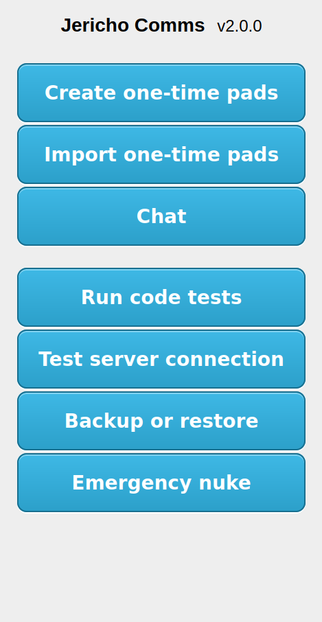

How to use
These instructions explain how to run the client side of the software to generate keys, export keys and start chatting. You should have completed the installation instructions first.
Table of Contents
- Run the program
- Run the unit tests
- Open the Create one-time pads page
- Selecting photos
- Processing the entropy
- Testing the collected data
- Exporting the random data for external testing
- Exporting the one-time pads for use
- Delivering the one-time pads
- Loading the one-time pads
- Using the chat application
- Backing up the one-time pads
- Emergency self destruct
- Final notes
1. Run the program
Once you've extracted the client files and the server is setup
(see installation instructions), you can open the client directory
and launch the index.html in your web browser. With Windows or Linux you can do this by right
clicking on the index.html file and selecting Open with then selecting the Web Browser e.g.
Firefox. This means the website will be running from an address like this in the address bar:
file:///media/truecrypt1/jericho/client/index.html
You should be presented with the main menu screen of the program:

It's a good idea to create a bookmark (Ctrl + D) for this main screen in your browser bookmarks bar so you can access the chat again quickly.
2. Run the unit tests
Click the Run code tests button.
Check to make sure all the code tests passed and there were no failures. This ensures the program will operate correctly in your browser. If something fails check you are using the latest version of Firefox or Chromium. If you have this and it is still failing, post a ticket on Github with a screenshot of the error.
3. Open the Create one-time pads page
Click the Back button on your browser to go back to the main screen and click on the Create one-time pads button. You should be taken to an introductory screen that explains how the True Random Number Generator (TRNG) works. After you have read this, click Launch TRNG. This takes you to a mostly blank screen with buttons along the top. All the actions to perform are numbered according the order things should be done. The buttons will be disabled until you complete the tasks in the correct order. Here you will generate the random data required for the one-time pads:
4. Selecting photos
Click the Browse... button and select two photographs from your hard drive. For high quality results,
use photos from a standalone digital camera or DSLR that has been captured in your camera's raw image
format and converted to PNG or BMP. Avoid JPEG and other lossy compression algorithms if possible as they
may affect the output in predictable ways. Avoid taking photographs of anything with strong sunlight
hitting it as this may over-expose certain areas in the photograph.
The photos should never have been uploaded to the internet, shared on social media or anywhere else. It must
be taken specifically for this purpose and you will delete it immediately after the one-time pads
have been generated. Do not use your wedding photos.
Use photos of something that is generally random in nature. Photos taken in macro mode of sand at a beach
or grass work very well. Bushes, flowers, trees, rocks and ocean waves also work well. You can
see the results of testing on various photographs here.
5. Processing the entropy
Once you have uploaded the photos it will be shown in the screen.
Click the Process button. This
processes the entropy in the photo according to the algorithm explained
here.
It should display a brief status message after a few seconds. The processing may take about a minute to
process the photograph depending on the speed of your CPU, the hash algorithm and how large the photo is.
After this you should see the results displayed and the Export button will have now been
activated. You should also see how many bits were collected, how many one-time pads were
created and whether all the randomness tests passed.

6. Testing the collected data
There are a number of ways to view the random data if you need to verify it.
-
Click the View bitmap or View colour bitmap buttons. This will show a bitmap
image on the screen allowing you to visualize the random data after it has been processed and
see if it looks random. If it looks like there are discernable patterns then it means the
random data is not uniformly distributed and you may be better off finding another photograph.
You can use the mouse to scroll up/down and left/right to see the full image. If you have a
good photograph, it should look something like this:


- Click the View test results buttons. This shows the results of some basic statistical random number tests on the output which are from FIPS 140-2. This tests every 20,000 bits of the random data. This will give you a summary of the randomnesses test results. If all the tests pass at each step then you have the best possible results and very good source photographs. If the earlier tests have failed, that does not matter too much. It may just be small sections of the photograph that are not uniformly random. The important thing is that the tests on the last line, the extracted bits, passes. If this does not pass you should click the Restart button and use some different photographs.
- Generally for a good photograph, e.g. close-up of sand at a beach, the extracted tests should pass. This will give excellent, truly random one-time pads. If the extracted entropy tests pass then it is a good indication that the randomness extracter worked and the data is now uniformly distributed and safe to use. Absolutely avoid using the data if the final tests fail.
7. Exporting the one-time pads for use
Now that the one-time pads have been created you need to export them separately for each user. This means each user gets allocated specific one-time pads to prevent re-use from another user. You definitely do not want to load the same pads for each user or a pad could be accidentally re-used which will allow for cryptanalysis.

- There are multiple ways to export the pads. Generally the text file method (default) is the easiest. This will export the one-time pads to a text file which you can load into the program later. You can also export to the clipboard and then manually copy and paste into a text file. Version 2.0 will include a method to export to an image file so the file can be easily imported on tablet and mobile devices which add restrictions to only allow importing from images.
-
Next to Export to select option
One-time pads (Text file). Click the Export button which will popup a save dialog. Save the file to removable storage such as MicroSD card, SD card or USB drive. If you need plausible deniability you should always save the one-time pads within a hidden encrypted volume e.g. with TrueCrypt. -
Now set the full server address and port in the format shown. If the server is using a
non-standard port you can add the port number into the URL e.g.
http://servername.com:443. If the code for the web server is not in the root directory of the web server be sure to add the directory path in too e.g.http://servername.com/chat/. - Click Create server key to generate a 512 bit server API key. This needs to match the one in the server configuration file. See instructions for editing that here.
- Click the Test server connection button. This should show a success message on the screen. If a successful connection cannot be made you may have the URL wrong, the key may be incorrect or the server side is not configured correctly. If you are having trouble there are some troubleshooting steps here.
- Next set the Number of users in group. This should match the number of users in the chat group that is specified in the server config file.
- Next you can choose custom User call signs (nicknames) for the users in the chat group. Only user letters A-Z, a-z and numbers 0-9 for the custom nickname. These custom nicknames are kept client side and exported with the one-time pad data. They are only visible to each user with the one-time pads, they are not transmitted over the network as part of the protocol. Only the generic call sign e.g. alpha, bravo, charlie etc are transmitted which identifies which user is communicating with the server. This is used to mark when a user has read a message on the server so it does not retrieve it twice.
- Next you can choose a Passphrase to encrypt the one-time pads before they are transported. This passphrase should be communicated in person when you deliver the pads to the other user/s. It should not be stored in any computer and ideally not written down on paper either. This gives you some extra security if your storage media is stolen or confiscated (e.g. by immigration security/border control) when the one-time pads are in transit. The passphrase strength should be at least 256 bits to prevent quantum computer attacks.
- In the Advanced options you can choose to Store the PBKDF salt as a separate keyfile. This means 1536 bits of random data which is critical to decrypting the database can be saved to a different storage medium than where the one-time pads will be for transport. If this keyfile is stored on a separate MicroSD or printed on a piece of paper then an attacker needs this information to have any hope of decrypting the database. If you are at risk of having your electronic devices confiscated as you go through customs you can store the keyfile written printed on a piece of paper inside a book or magazine. Then if your notebook PC is confiscated which has the one-time pads you can eat the piece of paper and even divulge the password if forced to under duress and no-one will be able to crack the database for a very long time.
- Next in the Advanced options you can choose to Enter the PBKDF iterations at decryption time. If checked, the number of PBKDF iterations will not be stored with the one-time pads and will need to be manually entered at decryption time. These numbers can be written on a piece of paper or remembered and communicated verbally with the user/s you are sharing the encrypted one-time pad database with. This increases the amount of work for an attacker by a large margin as it is another piece of the puzzle they do not have to crack the database encryption. Essentially an attacker will need to try every possible number of PBKDF iterations (1 - 10,000+) for every password attempt they make.
- Finally in the Advanced options you can choose the number of PBKDF iterations to perform for both PBKDF algorithms. This is the amount of computational difficulty required to compute the master encryption key from the passphrase. Attackers have the advantage as they can perform password guessing attempts in parallel on supercomputers and specialised hardware like GPUs and ASICs. This forces them to expend significant computational effort for each password attempt. The defaults of 10,000 iterations for both algorithms are reasonable for a quad core desktop PC and may take about 8 seconds to encrypt/decrypt. If the database will be decrypted on a low powered mobile device or tablet you may wish to lower the number of iterations significantly otherwise the database will take a long time to decrypt. You can compensate for the lower number of iterations by adding extra password characters. There are some limits to what number of iterations can be computed in a reasonable timeframe with the browser's JavaScript engine so 100,000 iterations is likely unrealistic. It is better to use a longer passphrase to compensate for this anyway.
- Click the Export one-time pads button which will prompt a save dialog to save the one-time pads for each user. Ideally write them to the transport storage media immediately to avoid leaving copies across multiple storage devices.
8. Delivering the one-time pads
At this point you should have the generated one-time pads on a USB drive or other removable/portable media. To get the one-time pads to the other users, ideally they will arrange a physical meetup. This is to create a secure channel or air gap to deliver the one-time pads which ensures the encryption keys are not intercepted or compromised by transferring them over an insecure network like the internet. Key exchange is considered out of scope for the program itself as this is the user's responsibility. The best method is to hide in plain sight. Here are a few solutions that will usually work:
- Meeting the users in person for a coffee/drink/lunch/dinner provides an innocent cover for the exchange of encryption keys. If you are going about your daily activities this is the least suspicious option and the most likely to succeed.
- A dead drop. Arrange the time and place of the dead drop (or regularly scheduled dead drops) in person or using another method, but do not arrange this over an insecure channel like the phone or internet.
- If your country does not inspect internal mail you can hand sign a sealed courier envelope and send it with reasonable assurance that it won't be compromised. If the package appears to be opened on delivery, consider the encryption keys compromised and do not use them. International mail is sometimes opened by Customs so it is not a reliable method. It would not be difficult to hide an encrypted MicroSD within something else though.
- It is not difficult to get a laptop, portable hard drive, MicroSD card, or SD card through Customs at national or international airports. You can also hide them in your luggage or on your person. If your government generally clones or scans personal phones or computers as you are going through Customs you may need to use steganography to hide the one-time pads within your vacation photos, videos or other files.
- Governments and diplomats also have the option of using a diplomatic bag to transfer items to another country which have diplomatic immunity from search or seizure under the Vienna Convention on Diplomatic Relations.
- If you have lots of money you could potentially use someone like this to deliver your pads.
{kind=link}
The one-time pads absolutely cannot be sent via a less secure channel such as the internet even if you think you are using the best public key, block or stream cipher encryption there is. Your security will only be as strong as the cipher you used and you lose the perfect secrecy that the one-time pad provides.
If the other user already has a copy of the program they can use that. Otherwise just include a copy of the client files on the storage media before you give it to them.
9. Loading the one-time pads
By now each user should have a copy of the one-time pads and be back at their separate locations. Each user should open the main screen of the program. Click the Load one-time pads button. This will open up the following screen:
The easier option is to simply load the pads from the text file using the button provided. You can also manually open the text file containing the one-time pads, select all the text and then copy paste it into the text box provided.
Once successfully loaded, you must manually delete the text file from the removable storage device. The only remaining copies of the one-time pads should be in each user's browser storage.
Once loaded a button will appear that will take you to the main chat. You can also access the Chat from the main menu.
10. Using the chat application
Using the chat application is very simple to send and receive messages.
Be sure to look at each message received and ensure it is shown as Authentic. If someone is trying to interfere with your communications it may show a warning saying that the message has been tampered with. If that occurs you can ask the user to resend the contents of that message with the same Message ID. Due to the MAC sent with each message it will be impossible for an attacker to successfully forge a fake message without the program alerting you. If an invalid message is detected an attacker could be interfering with the server communications or has altered the data being sent. In any case you should likely seek to set up a new server as soon as possible.
Chat notification sounds can be turned off with the icon next to the Chat title. This setting will
be remembered next time you open the program. You can even use your own chat notification sound if you
want. Replace the incoming-message.wav file in the client\sounds directory with
your own WAV file.
11. Backing up the one-time pads
Each time a message is sent or received the one-time pad is deleted from each device. The messages will only stay on the screen until the user closes the browser tab/window. If you need to move the pads to a different device you should export the pads back to a text file. This will export only the remaining pads. Definitely do not re-import the original list of pads otherwise it will result in pad re-use. Go to the main screen and click Backup pads. The following page should load.
Create the backup first to text file, or copy to the clipboard then manually paste into a text file. Once done, clear the local database. This means you only have one copy of the pads and there's no chance of accidental re-use.
12. Emergency self destruct
To clear everything in an emergency, initiate the auto nuke. This will delete the one-time pads from all connected devices and delete remaining encrypted messages from the server once everyone has received the command. Next time one of the other users opens the application it will also clear everything on their machine. It will also clear sent and received messages from the screen of each device. Reserve this for an actual emergency because it is time consuming to recreate and deliver new one-time pads.
You can find the Emergency auto nuke button on the main screen. That will load up another page asking you to confirm the action:
After the auto nuke has been initiated and all group user's local databases have been wiped, the
server database should be ideally reset before you re-use it. The server administrator can run
the following command:
mysql -u root -p < /var/www/html/createtables.sql
13. Final notes
Remember to read the extra security precautions.